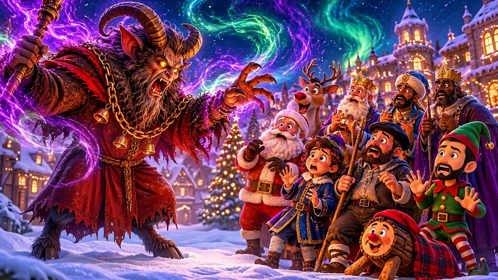
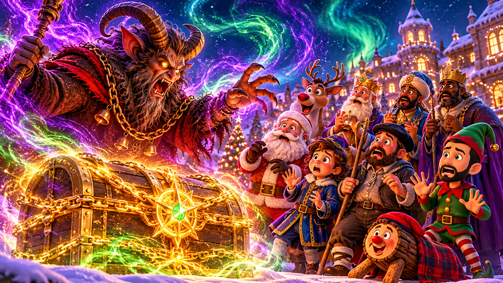
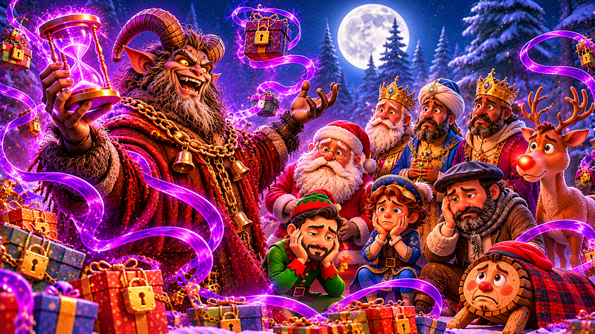

El malvado Krampus ha lanzado un hechizo de caos algebraico sobre todos los seres mágicos de la Navidad para que los niños pierdan la ilusión. Vuestra misión empieza en Oriente: leed con atención cada situación, traducid el enunciado a un sistema de dos ecuaciones con dos incógnitas y clasificad sus soluciones. Una vez liberados los Tres Reyes Magos, ¡ellos os darán pistas reales para rescatar al resto!

Equipo de rescate:

¡Enhorabuena! Habéis planteado, clasificado y resuelto todos los sistemas con éxito. Krampus ha sido derrotado y la ilusión de todos los niños y niñas del mundo vuelve a brillar.
Algún sistema no está bien planteado, clasificado o resuelto (o se ha agotado el tiempo). ¡No dejéis que desaparezca la Navidad! Revisad vuestras ecuaciones y volved a intentarlo.
